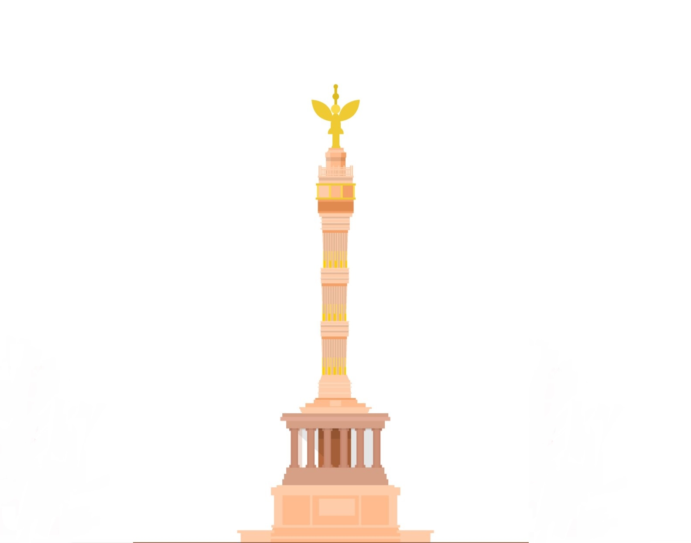
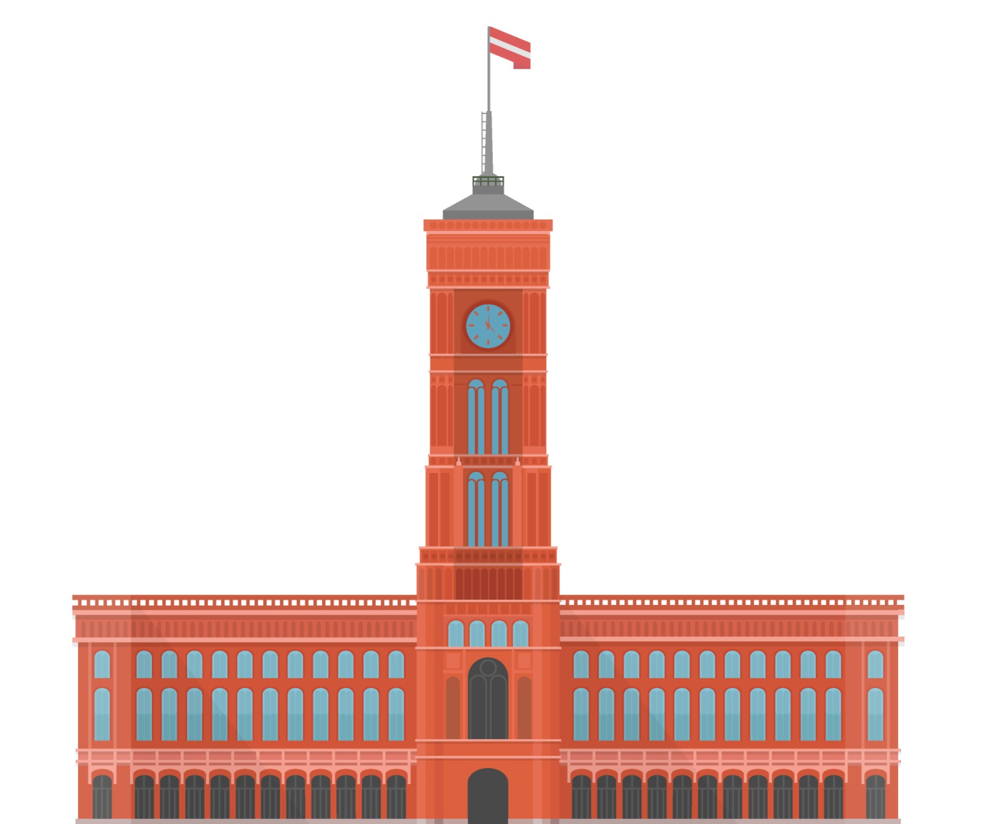
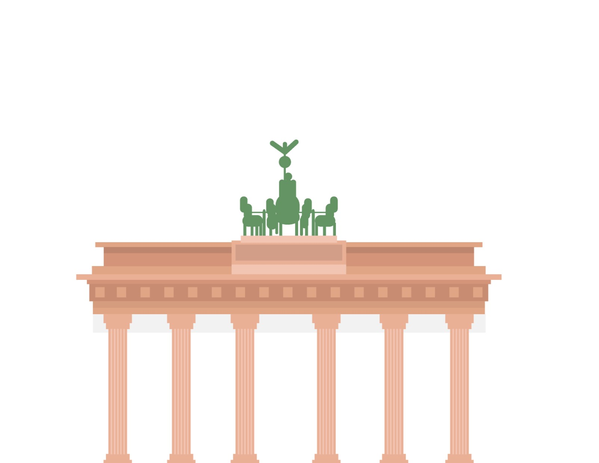

<!DOCTYPE html>
<html lang="en">
<head>
    <meta charset="UTF-8">
    <meta http-equiv="X-UA-Compatible" content="IE=edge">
    <meta name="viewport" content="width=device-width, initial-scale=1.0">
    <title>Document</title>
    <main>
      <div class="container4 fade-in">
        <div class="floatTop">
          <div class="img-container">
            
            <p id="text">Dive into history</p>
          </div>
          <div class="img-container">
            
            <p id="text">Good to know</p>
          </div>
        </div>
        <div class="floatBottom">
          <div class="img-container">
            <p id="text">Let`s plan your trip</p>
            
          </div>
          <div class="img-container">
            <p id="text">For food lovers</p>
            
            
          </div>
        </div>
      </div>

      <label class="switch">
        <input type="checkbox" id="toggle">
        <span class="slider round"></span>
      </label>
      
      <style>
:root {
  --primary-color: #333;
  --background-color:#1C1A1A;
  --chess1:#F7F7F7 ;
  --chess2: #E6F1F6;
  --dark-mode: #9F9D9E;
}

.dark-mode {
  --background-color: #9F9D9E;
  --color: #FFF;
}

.switch {
  position: relative;
  display: inline-block;
  width: 60px;
  height: 34px;
}

.switch input {
  opacity: 0;
  width: 0;
  height: 0;
}

.slider {
  position: absolute;
  cursor: pointer;
  top: 0;
  left: 0;
  right: 0;
  bottom: 0;
  background-color: #ccc;
  transition: 0.4s;
}

.slider:before {
  position: absolute;
  content: "";
  height: 26px;
  width: 26px;
  left: 4px;
  bottom: 4px;
  background-color: #fff;
  transition: 0.4s;
}

input:checked + .slider {
  background-color: #2196F3;
}

input:focus + .slider {
  box-shadow: 0 0 1px #2196F3;
}

input:checked + .slider:before {
  transform: translateX(26px);
}

.slider.round {
  border-radius: 34px;
}

.slider.round:before {
  border-radius: 50%;
}

        /* 4 boxes*/
        .container4 {
          margin: 20px;
          border-radius: 15px;
        }
      
        .container4 > div{
          display:flex;
          background-color: var(--chess1);
          border-radius: 15px;
          margin-left: 20px;
          margin-right: 20px;
          text-decoration: none;
          justify-content: center;
        }
      
        .floatTop{
          margin-top: 20px;
        }
      
        .floatTop, .floatBottom {
          display: flex;
          justify-content: center;
          align-items: center;
          margin:0;
          padding: 0;
          gap: 30px;
        }
      
        #box {
          max-width: 300px;
          max-height: 400px;
        }
      
        .img-container {
          display: flex;
          flex-direction: column;
          align-items: center;
          justify-content: center;
        }
      </style>

      
</head>
<body>
    <script>
      $(document).ready(function() {
  $('#toggle').change(function() {
    $('body').toggleClass('dark-mode');
  });
});

    </script>
</body>
</html>